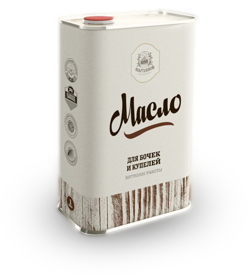
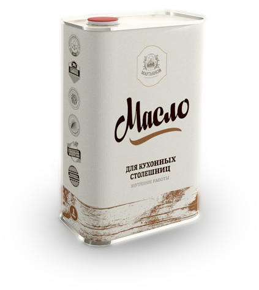
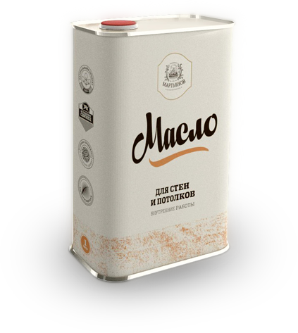
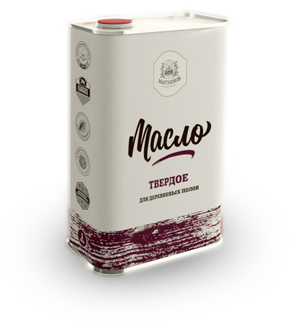
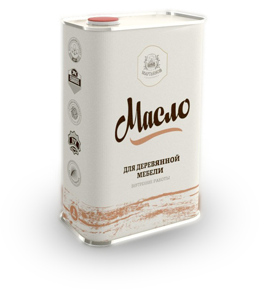
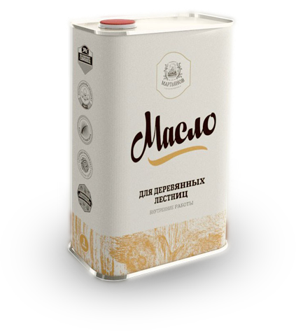
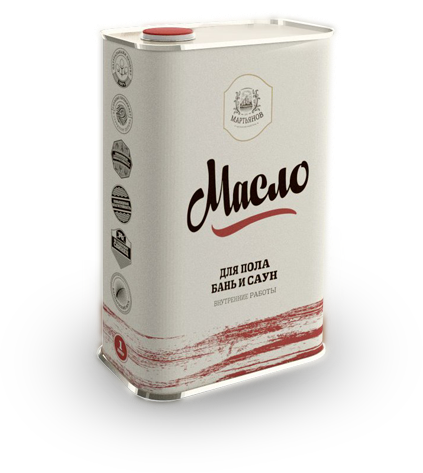
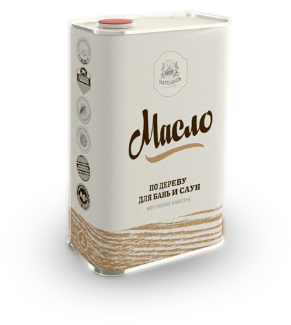
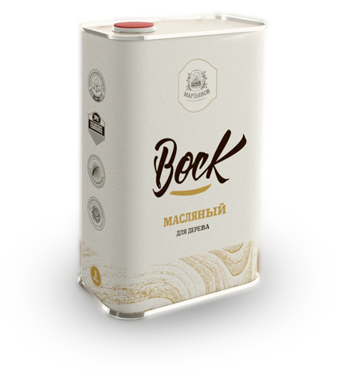

Предлагаем самый большой в России ассортимент масел для дерева
- Для наружных работ
- Для внутренних работ
- Для бань и саун
- Для сада и терасс
- Колеры для масла и воска











Вы являетесь